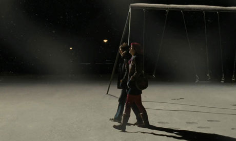
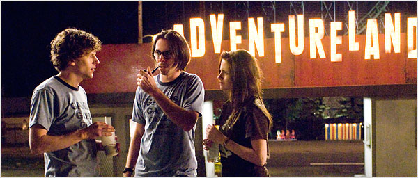
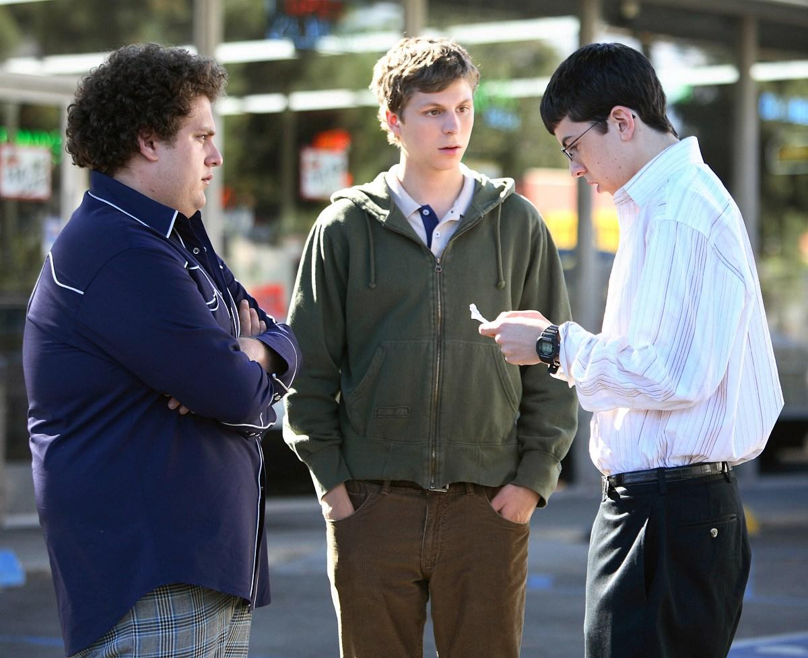
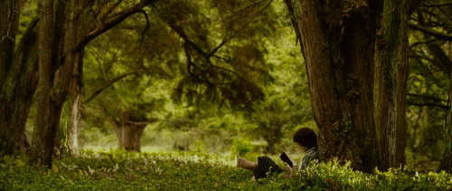
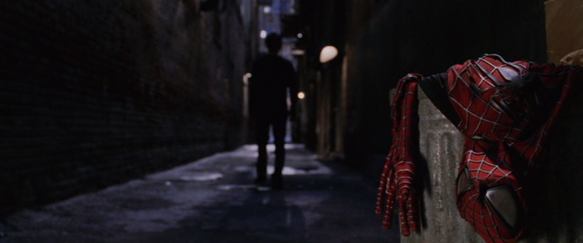

Pook's Pick

Hit or Shit
Comfy= Shorthand internet slang for comfortable
Just in case you didn’t know what “comfy” means, which raises the real question: What DOES comfy mean?
It means different things to different people, so for the sake of this list I’ll give you MY definition of it: “A movie that isn’t all that challenging, has an overt or subverted atmosphere of sadness/gloom, and most importantly, usually taking place in a cold atmosphere with close friends. The lighting of a movie is a huge factor. The movie also will usually have been first viewed at an important/impressionable time in one’s life and maybe even introduced to you or watched numerous times by yourself and a significant other.
So, let’s get on to the list so you guys can get on to bitching
1. Scott Pilgrim Vs. The World (2010, Edgar Wright)

“Scott Pilgrim Vs. the World” is basically the perfect movie for any “nerdy” 18-21 year old. The movie has mid-twenty somethings basically
wandering through life and slacking off. Tons of video game nods and features tons of questioning one’s success or lack thereof, not to
mention it is rapidly paced and easy as fuck to watch. It also takes place in a cold atmosphere.
Age first watched at: 18
2. In Bruges (2008, Martin Mcdonagh)
“In Bruges” might not qualify as comfy to most people, but minus the violence and tension, it really is
comfortable as fuck. It basically boils down to just two bros walking around a nice comfy town in Europe
musing on a variety of things. That and killing kids.
Age first watched at: 19
3. Adventureland (2009, Greg Mottola)

“Adventureland” takes place in what is, for most people, the comfiest times of their lives:
summer in your early twenties and in an amusement park. It’s about a few college kids taking a
bullshit job just to try to relax and have fun before “real” life starts. It’s pretty funny and features
my boy Ryan Reynolds. Mixed with raunchy comedy and a genuine fear of growing up,
“Adventureland” lets the viewer know it’s ok to not have it all figured out just yet.
Age First watched at: 19
4. Harry Potter 1 - 4(Various, Various)
I started reading Harry Potter around ‘98, so imagine my hype when the first movie came out, AND IT
WAS GOOD! The first four films are very, very comfy, mostly focusing on the trio on somewhat whimsical
adventures. The first two feature a very lighthearted, adventurous tone, while the later two have the
beginnings of a darker story. From the castle to the grounds and just the overall sense of adventure,
come Christmas time, that ABC “Harry Potter” marathon is pure fire.
Age first watched at: As they released in the theatre
5. The Social network (2010, David Fincher)
One of my favorite movies is also one of the comfiest. It is purely dialogue driven and takes place in
the winter on a college campus. It is also directed by David Fincher, who frames everything perfectly and
films everything through a warm-looking lense. The soundtrack is also fucking amazing and relaxing. If
it’s a cold rainy night, then I’m gonna be tucked in watching the highly dramatized founding of the home
of everyone’s favorite slightly racist high school friends they don’t talk to anymore but still have added.
Age first watched at: 19
6. Superbad (2007, Greg Mottola)

So comfy doesn’t exactly have to mean good, which isn’t the case here because I consider “Superbad” to
be the most well written film of all time. The movie is literally a laugh (or three) a minute. It is just jam
packed with so many jokes and quotable lines. Added comfy if you were in high school when every single
“funny” kid went to Hot Topic and got a Mclovin shirt. The high school setting and the “problems” they
face help it be truly comfy. To go back to a time when getting beer was all we had to worry about, huh?
Age first watched at: 15 (in the cinema, I was something of a bad-ass)
7. Lord of the Rings: The Fellowship of the Ring (2001, Peter Jackson)

“Why just ‘Fellowship?’” you might ask. Well, let me tell you: the movie is mostly lighthearted and
whimsical, so to speak. Everything the shire theme starts up, I know it’s time to snuggle up and get
comfy. The shire might literally be the comfiest place in cinema. This movie is just one of the most
soothing, engrossing movies out there. It’s as simple as that.
Age first watched at: 11
8. Shame (2011, Steve McQueen)
Okay- so maybe a movie about a sex addict lusting for his sister and losing his job ISN’T comfy, but the
cinematography is. The nightlife, the misty city streets, the rainy mornings, the atmosphere is a gloomy,
dreadful masterpiece of cinematography.
Age first watched at: 20
9. Spider-Man 1 and 2 (Sam Raimi, 2002/2004)
